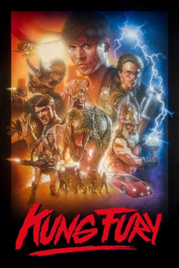

#1212 Kung Fury ENGLISH
 gesehen am 02.07.2015
gesehen am 02.07.2015
 
 IMDB-Wertung: 8.0 / 10
IMDB-Wertung: 8.0 / 10  Metascore: 0
Metascore: 0 
Als ein Freund von Supercop Kung Fury (David Sandberg) von dem gefährlichsten Kung-Fu-Master-Verbrecher aller Zeiten, Adolf Hitler aka Kung Führer (Jorma Taccone), ermordet wird, beschließt der eigenwillige Polizist, in der Zeit zurückzureisen, um im Nazi-Deutschland das Schreckensreich Hitlers ein für alle Mal zu erledigen. Doch ein Fehler bei der Prozedur katapultiert ihn noch viel weiter zurück in die Zeit der Wikinger, von wo aus er einen Ausweg finden muss, um mal wieder den Tag zu retten.
Jahr: 2015
Dauer: 31 Minuten
FSK:
Land: Schweden Studio: YouTubeTonspuren:
Untertitel: Deutsch, Englisch,
Auflösung: 1080p (1920x1080) Größe: 2242 MB
Genre: Kurzfilm, Action, Komödie, Fantasy, Sci-Fi
Regisseur: David Sandberg
Drehbuch: David Sandberg
Soundtrack:
Darsteller:
 Jorma Taccone als Adolf Hitler
Jorma Taccone als Adolf Hitler- Andreas Cahling als Thor
- Magnus Betnér als Colonel Reichstache
- Björn Gustafsson als Private Lahmstache
 David Hasselhoff als Hoff 9000
David Hasselhoff als Hoff 9000- Tomas Blomberg als Boombox Guy and Runner
- Vlad Micu als Extra and Runner
- David Sandberg als Kung Fury
- Steven Chew als Dragon
- Leopold Nilsson als Hackerman
- Per-Henrik Arvidius als Voice of Thor / Chief
- Erik Hörnqvist als Triceracop
- Frank Sanderson als Voice of Triceracop / Cobra / Dinomite
- Eleni Young als Barbarianna
- Helene Ahlson als Katana
- Yasmina Suhonen als Voice of Katana
- Eos Karlsson als Red Ninja
- Joel Dunkels als Guy with Telephone
- Julian Maroda als Boombox Dude
- Marc Strömberg als Street Thug with Skateboard
- Barry Hitchings als Guy Playing Gauntlet , uncredited
- Gustaf Lingmark als Runner , uncredited
- Sebastian Sahin als Street Thug , uncredited
Datei: X:\2015(G-M)\Kung Fury ENGLISH (2015, FSK, 1920x1080).mkv seit 04.06.2015
Festplatte: HD 2015(A-Z)
 Es gibt insgesamt 129 Filme in der Gruppe '2015(G-M)'
Es gibt insgesamt 129 Filme in der Gruppe '2015(G-M)'